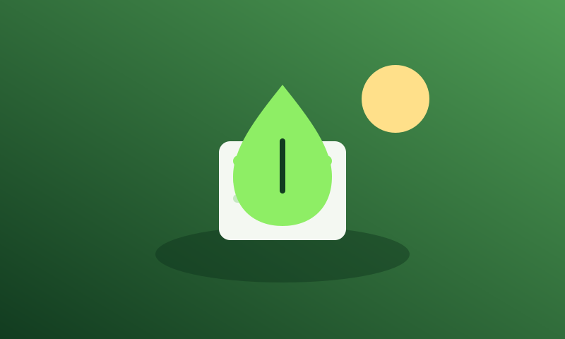

Economize água
Feche a torneira ao escovar os dentes (economia de até 12 litros por vez), tome banhos mais curtos e reutilize a água da máquina de lavar para limpar quintais.
🌱 HÁBITOS SIMPLES
Pequenas mudanças no cotidiano geram grande impacto ambiental e economia financeira ao longo do tempo.
Adotar um estilo de vida ecológico não exige reformas caras. Mais de 70% da economia doméstica de água e eletricidade vem da mudança de hábitos simples, como o controle do tempo de banho, o uso da luz solar e o planejamento das compras da semana.
Confira abaixo nossas recomendações práticas divididas por tema e por cômodo da residência.

Feche a torneira ao escovar os dentes (economia de até 12 litros por vez), tome banhos mais curtos e reutilize a água da máquina de lavar para limpar quintais.
Troque lâmpadas antigas por LED (que consomem até 80% menos), pinte paredes com cores claras e retire aparelhos em modo stand-by da tomada.
Tenha sempre uma sacola retornável na mochila, compre a granel para evitar embalagens plásticas e prefira produtores e feiras do seu bairro.
Faça uma lista antes de ir ao mercado, armazene alimentos corretamente na geladeira e aproveite talos, folhas e cascas em receitas nutritivas.
Para trajetos de até 2 km, priorize caminhar ou usar bicicleta. Em percursos maiores, opte por transporte público ou carona solidária.
Limpe conectores e faça manutenção preventiva em celulares e computadores. Quando não tiverem conserto, leve a pontos de coleta de e-lixo.
